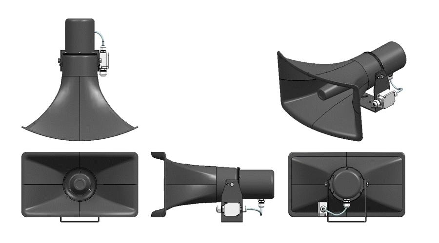

Special Acoustic Device
HS-100A: Weatherproof Horn Speaker, Built to a Buyer's Specification
Request. An overseas buyer needed dependable broadcasting along coastlines, borders and military perimeter zones.
Solution. A rugged GRP horn, a sealed driver housing and a water-tight junction box that keep performing in salt, wind, rain and extreme cold.
| Power | 100W |
| SPL | 117dB (1W/1m) · 138dB (100W/1m) |
| Frequency | 100Hz – 6kHz |
| Input | 100V line (35V option) |
| Protection | IP56 |
| Temperature | -62°C to 55°C |
| Weight | 10.0kg |